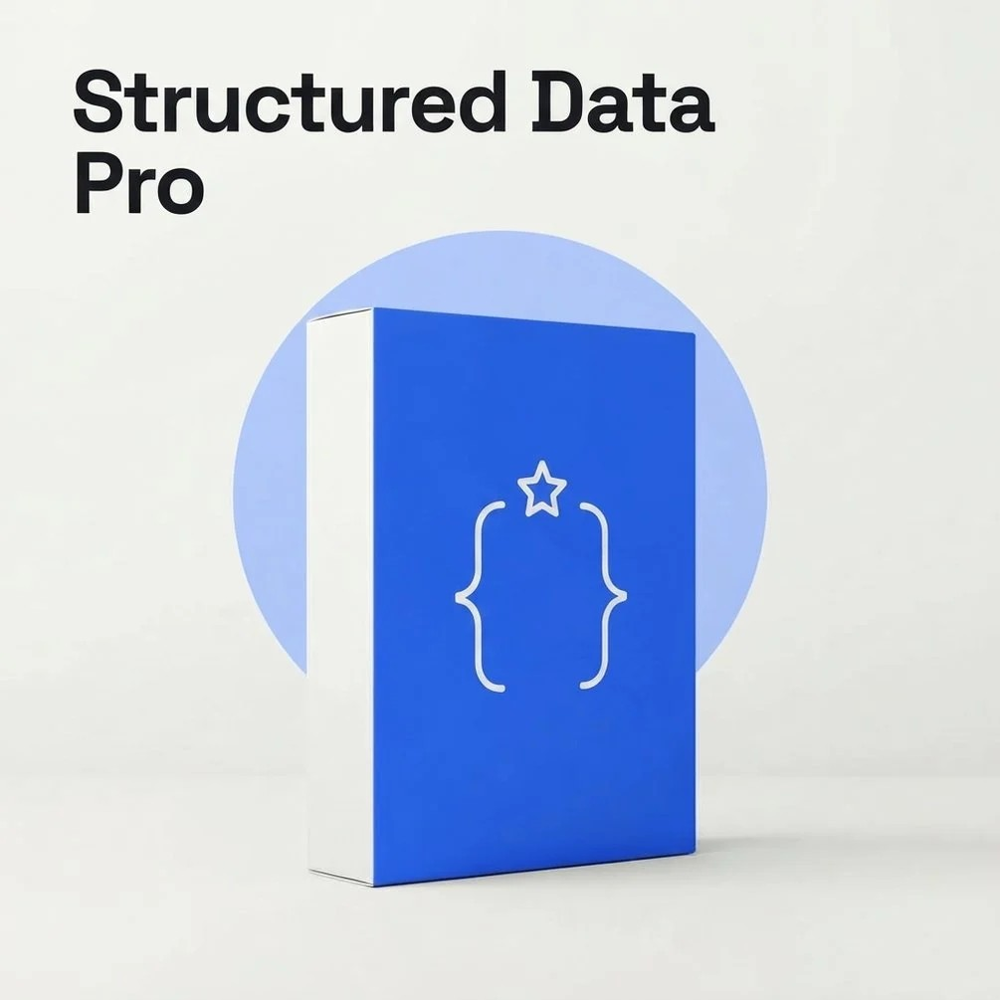

AI Skill Pack Guides / SEO and AI search visibility / Structured Data Pro Pack

Free schema markup guides, a checklist sheet, a slide deck and a printable test checklist from İsmail Günaydın, maker of Structured Data Pro Pack. Each file answers a different question about JSON-LD and AI search.
By İsmail Günaydın. Structured Data Pro Pack: full details
Open all the free files in one Google Drive folder
General information about schema markup as of October 2026. Google and AI tools decide what they show and cite, and results depend on your own site. Not affiliated with Google, Anthropic or OpenAI.